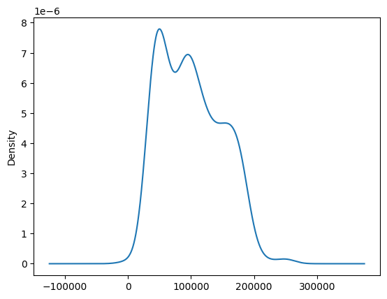
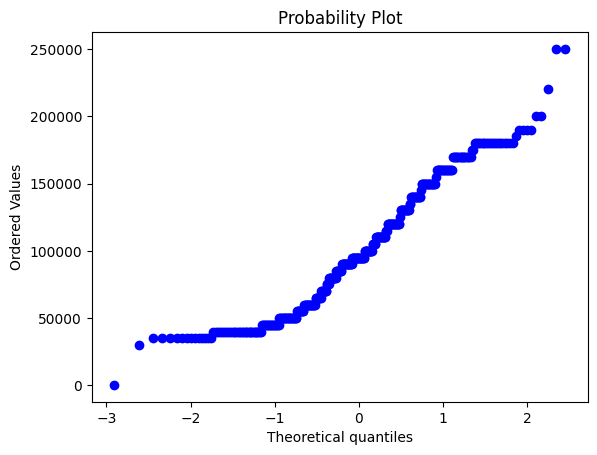
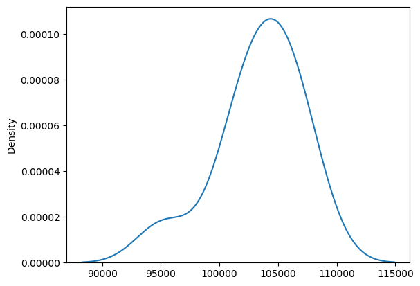
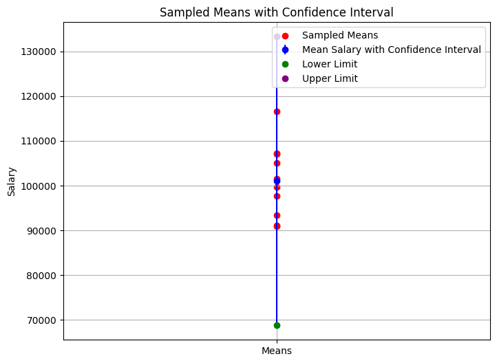

import numpy as np
import pandas as pd
import scipy.stats as stats
import matplotlib.pyplot as pltWhat is Confidence Intervals ?
Confidence Intervals, in simple words, represent a range of values where we anticipate particular population parameters (e.g., Mean) to fall.
Confidence Levels indicate how confident we are that the true values lie within the interval, denoted by a percentage, e.g., 95%.
Confidence Interval = Point Estimate ± Margin of Error
There are two ways to obtain Confidence Intervals:
- Z-Procedure (Sigma Known)
- T-Procedure
Z- Procedure
This method is used for populations whose variance is known.
Assumptions:
- Must Have Population Standard Deviation
- Random Sampling
- Population Distribution must be a Normal Distribution or follow Central Limit Theorem
Formula: \[ C.I = \bar{X} \pm Z_{\alpha / 2} \times \frac{\sigma}{\sqrt{n}} \]
| Where: | |
|---|---|
| \(\bar{X}\) | Point of Estimation or Mean of samples |
| \(Z_{\alpha / 2}\) | Z-value for Confidence Level |
| \(\sigma\) | Standard Deviation of population |
| \(n\) | Sample Size |
We mostly estimated using a 95% confidence level for our estimations, allowing us to formulate the following formula: \[ C.I = \bar{X} \pm 1.96 \times \frac{\sigma}{\sqrt{n}} \]
We Use a Salary Dataset for Demonstration. Let’s Take Salary Column To Predict our Population Parameters.
df = pd.read_csv('Salary.csv')df.head()| Age | Gender | Education Level | Job Title | Years of Experience | Salary | |
|---|---|---|---|---|---|---|
| 0 | 32.0 | Male | Bachelor's | Software Engineer | 5.0 | 90000.0 |
| 1 | 28.0 | Female | Master's | Data Analyst | 3.0 | 65000.0 |
| 2 | 45.0 | Male | PhD | Senior Manager | 15.0 | 150000.0 |
| 3 | 36.0 | Female | Bachelor's | Sales Associate | 7.0 | 60000.0 |
| 4 | 52.0 | Male | Master's | Director | 20.0 | 200000.0 |
Let’s check the Distribution of Salary
print(df['Salary'].describe())count 373.000000
mean 100577.345845
std 48240.013482
min 350.000000
25% 55000.000000
50% 95000.000000
75% 140000.000000
max 250000.000000
Name: Salary, dtype: float64df['Salary'].plot(kind='kde')
Let’s be more Clear by Using QQPlot
stats.probplot(df['Salary'],dist='norm',plot=plt)
plt.plot()
df['Salary'].skew()0.400578053273342Now Let’s check through central limit theorem.
sample_salary = []
for i in range(10):
sample_salary.append(df['Salary'].dropna().sample(50).values.tolist())sample_salary = np.array(sample_salary)sample_salary.shape(10, 50)sample_means = np.mean(sample_salary, axis=1)import seaborn as snssns.kdeplot(sample_means)
Now it’s approximately follow normal distribution.
Now all Conditions Satisfy.
Let’s Calculate Confidence Intervals using Z- Procedure.
# Note in Z_Procedure We have to know the Standard Deviation of Population
standard_deviation = np.std(df['Salary'])standard_deviation48175.30518517429lower_limit = np.mean(sample_means) - 1.96 * (standard_deviation/np.sqrt(50))
upper_limit = np.mean(sample_means) + 1.96 * (standard_deviation/np.sqrt(50))print("The Range is :",lower_limit,'-',upper_limit)The Range is : 90027.88668699007 - 116734.91331300992At a 95% confidence level, the range for the confidence interval is [84058.58668699008 - 110765.61331300993].
This statement indicates that we are 95% confident that the true population parameter falls within the range of 84058.58668699008 to 110765.61331300993.
# To verify
population_mean = df['Salary'].mean()
print("The actual population mean:" ,population_mean,"lies within a confident interval range") if population_mean >= lower_limit and population_mean <= upper_limit else print("False")The actual population mean: 100577.34584450402 lies within a confident interval rangeT- Procedure
This method is used for populations whose variance is unknown, and it’s a commonly employed procedure for estimating population parameters.
Assumptions:
- Random Sampling.
- Population Distribution must be a Normal Distribution or follow Central Limit Theorem.
- Independent Observations.
- We don’t know the standard deviation of Salaries
Formula: \[ C.I = \bar{X} \pm t_{\alpha / 2} \times \frac{S}{\sqrt{n}} \]
| Where: | |
|---|---|
| \(\bar{X}\) | Point of estimation or Mean of samples |
| \(t_{\alpha / 2}\) | t-value for confidence Level |
| \(S\) | Sample mean of Standard Deviation |
| \(n\) | Sample size |
Note: \(t_{\alpha / 2}\) t-value for confidence Level which depends on degree of freedom (n-1)
For example, if we aim for a 95% confidence level and have a sample size of 40 for estimation, we can formulate the following formula (From T-table): \[ C.I = \bar{X} \pm 2.021 \times \frac{\sigma}{\sqrt{n}} \]
# samples were created by using 40 sample size of each
sample_salary = []
for i in range(10):
sample_salary.append(df['Salary'].dropna().sample(40).values.tolist())
sample_salary = np.array(sample_salary)
sample_means = np.mean(sample_salary,axis=1) # mean of each 10 samples
sample_salary_std = np.std(sample_salary,axis=1) # standard deviation of each 10 samples
sample_mean_of_standard_deviation = np.mean(sample_salary) # mean of all sample standard deviations# By Using formula
lower_limit = np.mean(sample_means) - 2.021 * (sample_mean_of_standard_deviation/np.sqrt(40))
upper_limit = np.mean(sample_means) + 2.021 * (sample_mean_of_standard_deviation/np.sqrt(40))print("The Range is :",lower_limit,'-',upper_limit)The Range is : 68743.83817322378 - 133309.66182677622# To verify
population_mean = df['Salary'].mean()
print("The actual population mean:" ,population_mean,"lies within a calculated confident interval range: ",lower_limit,'-',upper_limit) if population_mean >= lower_limit and population_mean <= upper_limit else print("False")The actual population mean: 100577.34584450402 lies within a calculated confident interval range: 68743.83817322378 - 133309.66182677622plt.figure(figsize=(8, 6))
plt.errorbar(x=1, y=np.mean(sample_means), yerr=2.021 * (sample_mean_of_standard_deviation/np.sqrt(40)), fmt='o', color='blue', label='Mean Salary with Confidence Interval')
plt.scatter(x=np.ones_like(sample_means), y=sample_means, color='red', label='Sampled Means')
plt.errorbar(x=1, y=lower_limit, fmt='o', color='green', label='Lower Limit')
plt.errorbar(x=1, y=upper_limit, fmt='o', color='purple', label='Upper Limit')
plt.xticks([1], ['Means'])
plt.ylabel('Salary')
plt.title('Sampled Means with Confidence Interval')
plt.legend()
plt.grid(True)
plt.show()